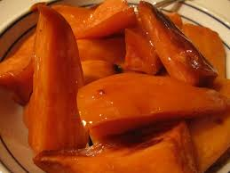

Candied Yams

It's Thanksgiving time and my favorite side dish is candied yams. Contrery to the names, this candied staple isn't made with actual yams but it's startchy counterpart sweet potatoes.
Ingredients
- sweet potatoes
- butter
- brown sugar
- cinnamon
- maple syrup
Directions
- Scrub and cut sweet potatoes in half longways.
- Cook in over at 375 degrees for 1 hour, cool and peel.
- Microwave rest of ingredients until melted.
- Have sweet potatoes flat side facing up in a pan. Pour liquid mixture on top.
- Cook in oven on 375 for 30 to 40 minutes (or until caramelized, sugar bubbling).